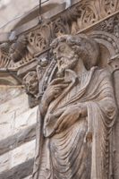

- Title Page
- Introducción
- Boston Globe— una breve historia
- Baron: Un nuevo rostro
- Nace una investigación
- El Equipo Spotlight
- El escenario nacional
- La “ciudad más católica”
- El Cardenal Law
- El Diario y el Cardenal
- El Globe y los católicos de Boston
- El caso del padre Geoghan
- Comenzar a escarbar
- Organizar los archivos
- Crece la base de datos
- Cuando la historia se torna personal
- Reportear tu cultura
- Potencial reacción
- Rezendes recibe una pista
- ¿Publicar o hacer una pausa?
La “ciudad más católica”

Una estatua fuera de la Iglesia de la Trinidad
Cortesía iStockphoto
Si había un lugar en Estados Unidos donde una gran investigación sobre la Iglesia Católica podría causar conmoción pública era Boston. Como señala Rezendes, periodista del Globe, Boston “era la más católica de las grandes ciudades del país”. Las tres ciudades más pobladas de Estados Unidos – Nueva York, Los Angeles y Chicago – tenían más católicos, pero Boston tenía la mayor proporción por población. De las 3,8 millones de personas que vivían en la región metropolitana de Boston en 2001, cerca de dos millones eran católicos.
El arzobispo de Boston presidía una extensa red de parroquias, escuelas, seminarios, conventos y hospitales. El mero título le confería un poder significativo, y durante gran parte del siglo 20, los omnipresentes arzobispos de Boston habían expandido el rango de su jurisdicción, ejerciendo su poder mucho más allá de la iglesia, y más allá de Boston. “La Arquidiócesis de Boston es una institución católica americana singular,” escribió un diario de Minneapolis cuando el líder de la arquidiócesis en esa ciudad estaba siendo considerado para el puesto en Boston. “Es para la iglesia lo que los Yankees de Nueva York son para el baseball, lo que Carnegie Hall es para la música, lo que Broadway es para el teatro.”[10]
No era sólo el número de católicos en Boston lo que explicaba su lugar especial en la imaginación de los católicos en todo el país; era su historia. Establecidos en la cuna del Puritanismo americano, los católicos habían superado la persecución y ascendido a los más altos niveles del poder político, económico y social. En ese sentido, la historia de los católicos de Boston era también la historia de los irlandeses de Boston. Los descendientes irlandeses representaban a más de un cuarto de los católicos en la ciudad y un porcentaje aún mayor de su clase gobernante.
Mientras llegaban oleadas de inmigrantes a Boston en las décadas de 1820 y 1840 y a inicios del siglo 20, los protestantes reaccionaron con hostilidad. Floreció una prensa anti-católica. En una ciudad donde los empleos eran escasos, en todos lados colgaban letreros con la sigla NINA – “Los irlandeses no necesitan postular” (“No Irish Need Apply”). Enfrentados a la discriminación y rechazados por las instituciones de la ciudad, dominadas por protestantes, los católicos de Boston desarrollaron intensos lazos con sus sacerdotes, quienes ayudaron a los nuevos inmigrantes a pagar arriendos, postular a la ciudadanía y crear sindicatos.
En las décadas previas a la Segunda Guerra Mundial, la suerte de los católicos de Boston cambió. Demostraron tener talento para la política, construyeron un fuerte sistema de parroquias y produjeron hábiles líderes, como William O’Connell, el primer arzobispo de Boston nombrado cardenal. O’Connell (sirvió entre 1907-1944) centralizó el poder y construyó numerosas iglesias, escuelas, seminarios, conventos y hospitales. Campeón militante del catolicismo, no hizo ningún esfuerzo por cooperar con los protestantes cuyo tiempo, dijo, ya había pasado. Su poder político le hizo competencia al poder del gobernador. Los políticos le pusieron el sobrenombre “Número Uno”; él por sí solo podía determinar el destino de las leyes.
Su sucesor fue el Cardenal Richard Cushing (sirvió entre 1944-1970). Un apreciado populista que promovía la cooperación entre religiones, Cushing ofrecía un gran contraste con su temido, autocrático y anti-ecuménico predecesor. Sin embargo, Cushing logró una estatura que igualó a la de O’Connell. Ray Flynn, ex embajador ante el Vaticano y ex alcalde de Boston, dijo: “Los Cardenales Cushing u O’Connell podían poner su brazo sobre un candidato a alcalde y esa foto saldría en las primeras planas de los diarios, y podría significarle 40 mil votos.”[11]
Pero si la historia de la iglesia en Boston era una historia de éxito, se encontró con un giro en la década de los sesenta. Fue entonces que la Arquidiócesis de Boston – junto con la Iglesia Católica en casi todo Estados Unidos – comenzó a declinar. Remecida por los cambios sociales, luchó por mantener sacerdotes, parroquianos y autoridad entre los católicos y la población en general. En 1968, cuando el Papa Pablo VI emitió su famosa encíclica reafirmando la oposición incondicional de la Iglesia Católica a los métodos anticonceptivos artificiales, suscitó un amplio rechazo tanto de parte de sacerdotes como de laicos. Los católicos dejaron de ir a misa o abandonaron la iglesia por completo. Menos sacerdotes entraban al seminario. Rechazando las enseñanzas de la iglesia sobre los anticonceptivos, las parejas tuvieron menos hijos. Aunque la iglesia se revigorizó en algunas partes por la llegada de inmigrantes latinoamericanos, luchó por mantener su relevancia ante muchos de sus miembros.
[10] Warren Wolfe, “Could Flynn be a savior in Boston?; The Twin Cities archbishop might get the ‘toughest job in the Catholic Church,’” Star Tribune, 28 de abril de 2003.
[11] Pamela Ferdinand y Paul Duggan, “In Boston, Driven by Disillusionment; As Priests' Abuse Scandal Unfolds, Irish American Catholics Angrily Confront Church,” Washington Post, 30 de octubre de 2002.